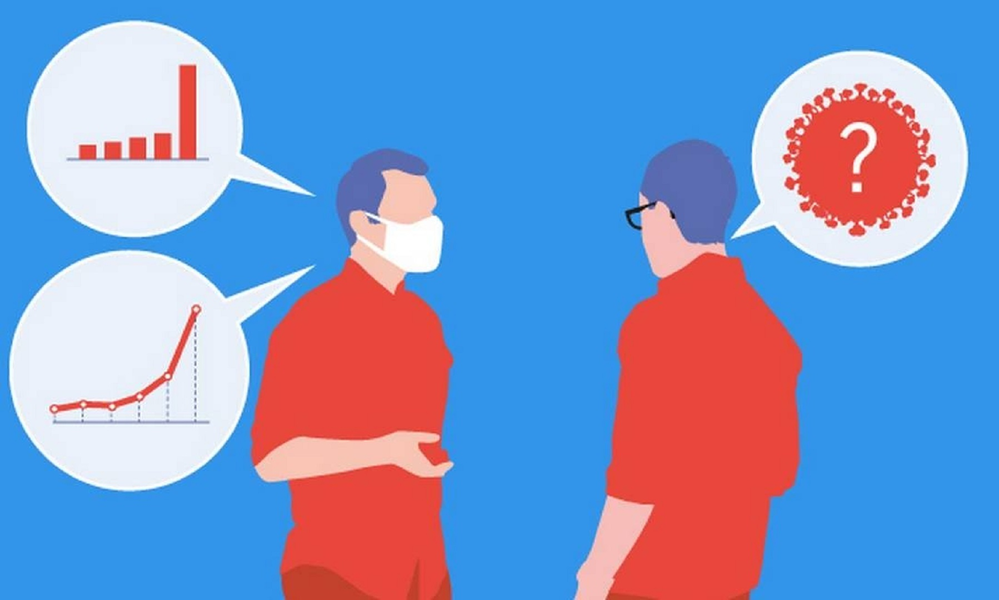

Home
Sobre
Contato
Saiba mais
Notícias
CORONAVÍRUS - TUDO O QUE VOCÊ PRECISA SABER - Canal Nostalgia
Assista no youtube
Como se prevenir do Coronavírus?
Assista no youtube
Coronavírus no Brasil
Como dialogar com quem subestima o novo coronavírus

O contra-ataque ao coronavírus – Detetives da Saúde - Podcast
Bem Estar #26: estamos preparados para diagnosticar o novo coronavírus?